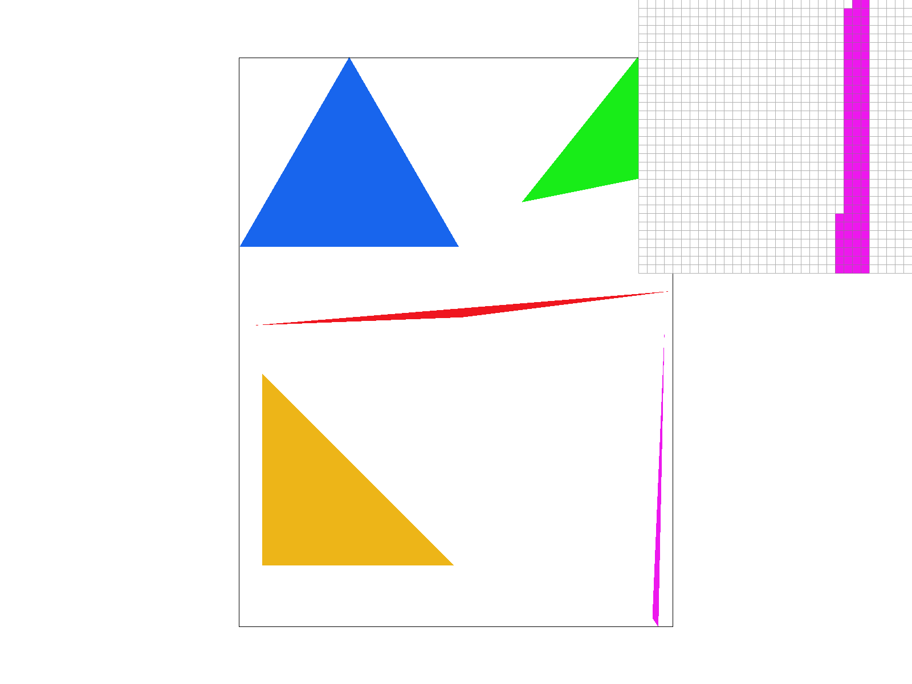
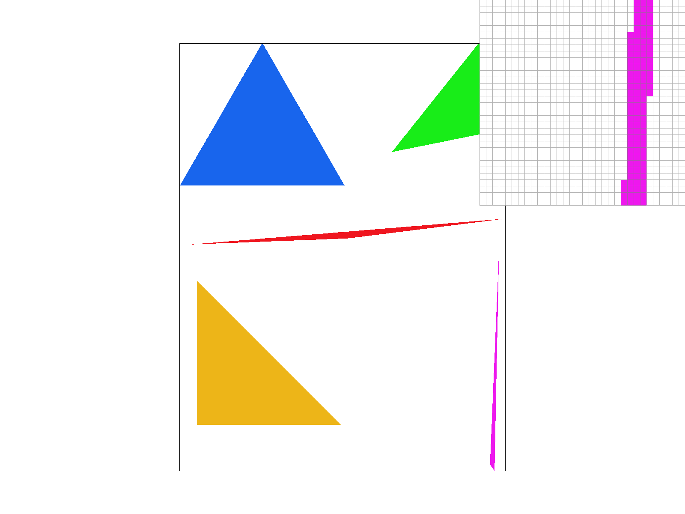
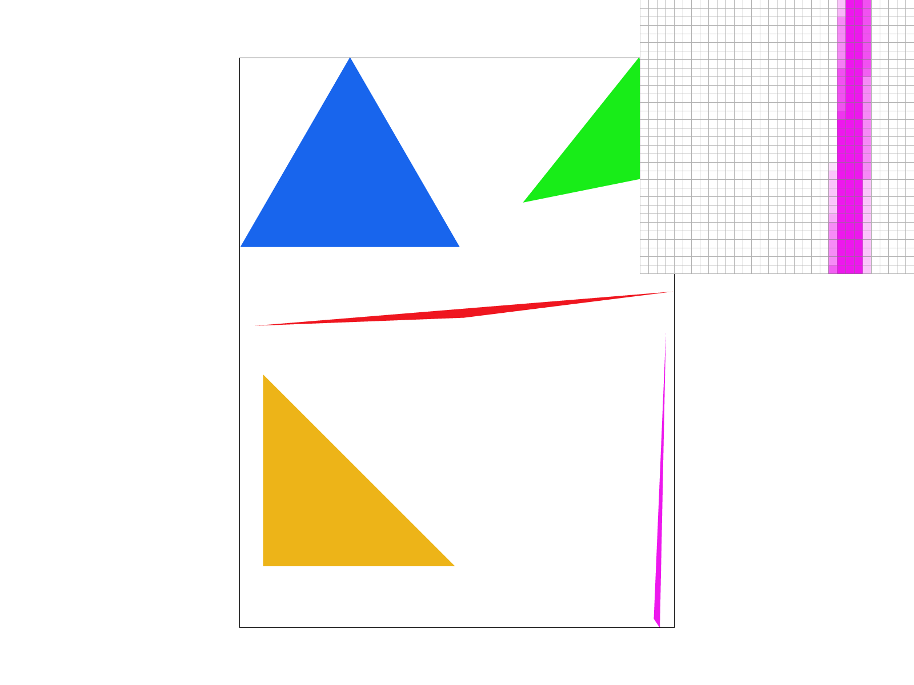
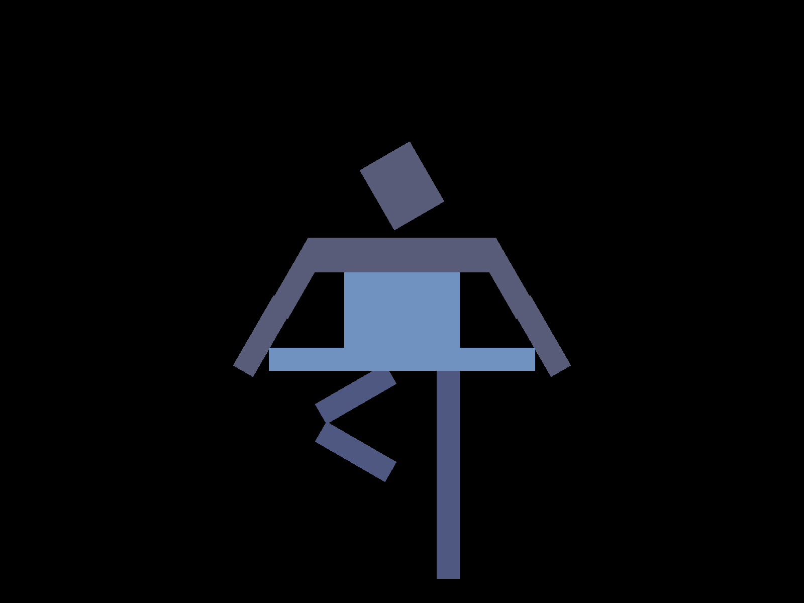
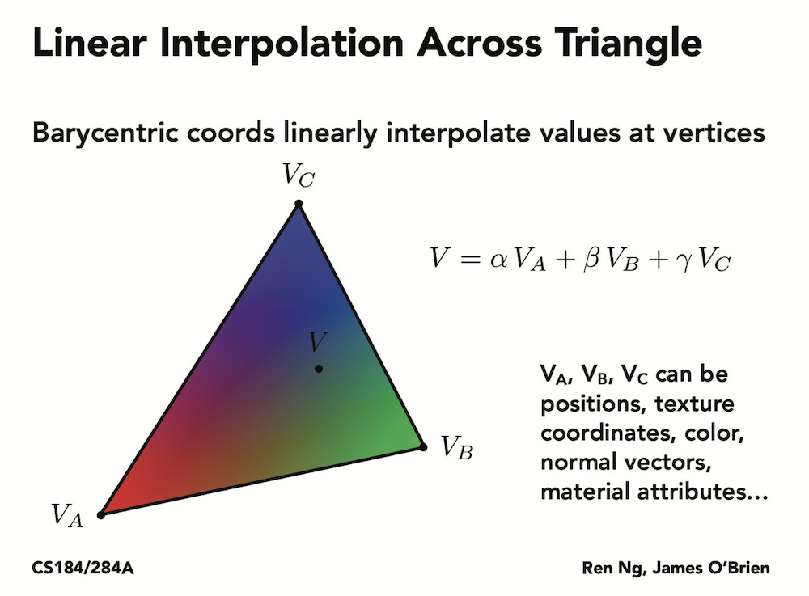
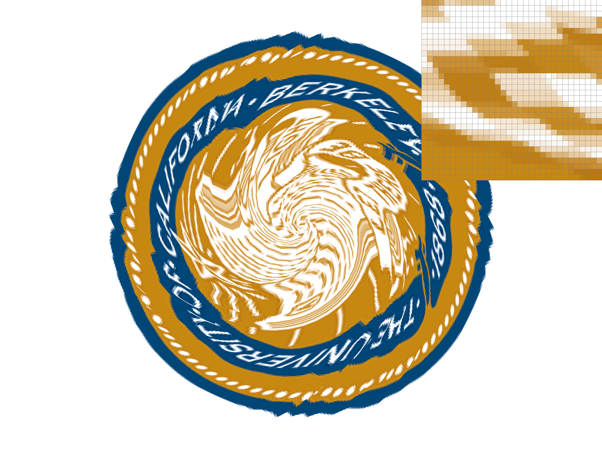
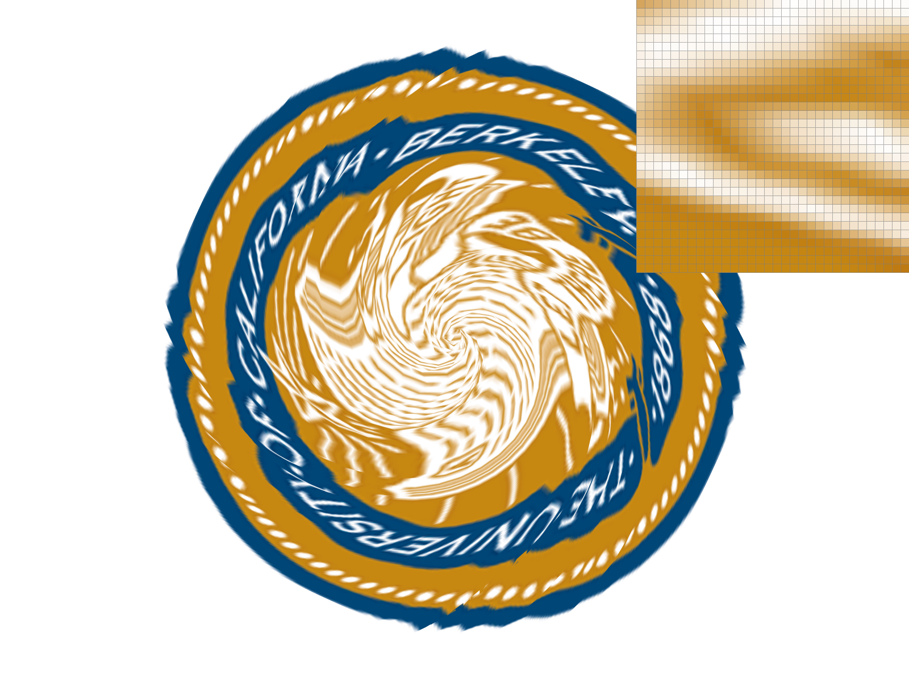
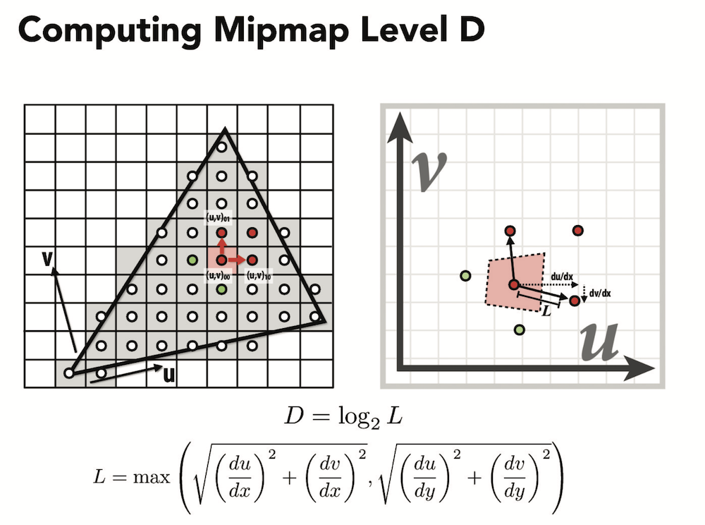
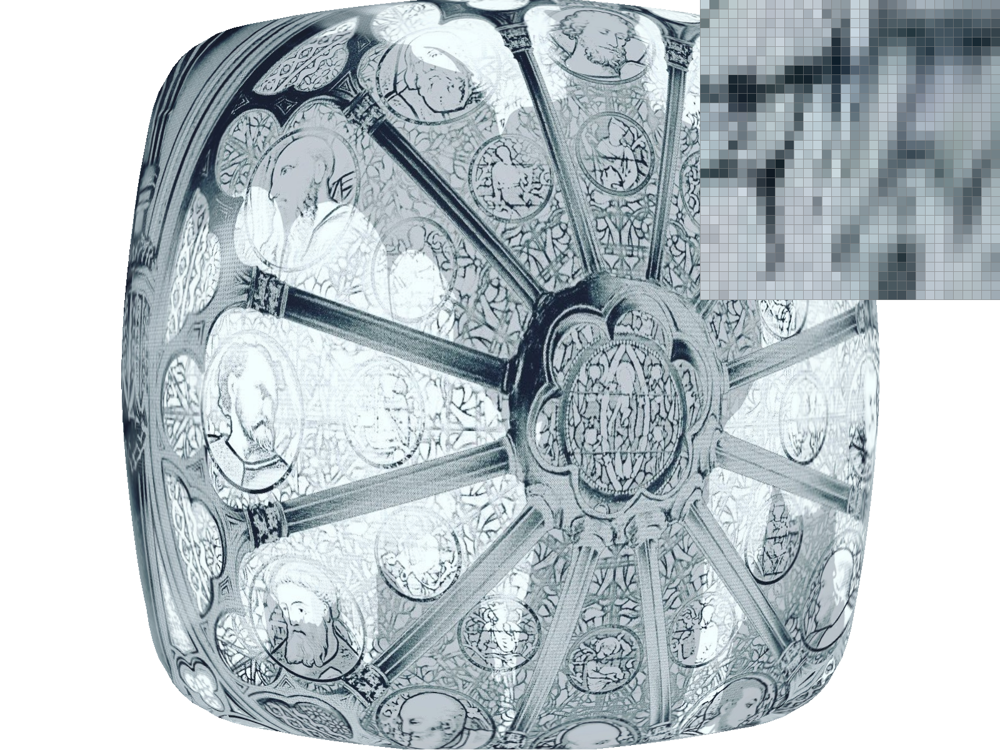

Overview
Give a high-level overview of what you implemented in this project. Think about what you've built as a whole. Share your thoughts on what interesting things you've learned from completing the project.
In this project, I implemented different methods for sampling images. As a whole the methods can strike a balance between speed, memory usage, and anti-aliasing power depending on different scenarios.
Section I: Rasterization
Part 1: Rasterizing single-color triangles
To rasterize a triangle, I first created a box framing the triangle from the coordinates of its vertices. Then, looping through every pixel within this box, I applied the line equation to determine if that pixel lies within the 3 boundaries of the triangle. If the 3 line tests consistently yield results either greater or less than 0, we consider that point to be inside the triangle. Then, if the pixel is within or on the triangle boundaries, its color is sampled and the corresponding pixel is filled.
This algorithm is no worse than one that checks each sample within the bounding box of the triangle because it does exactly that.
Part 2: Antialiasing triangles
My supersampling algorithm consist of the following functions: 1. rasterize-triangle, 2. fill_pixel, 3. set_sample_rate, 4. resolve_to_frame_buffer.
My supersampling data structure consist of the following: sample_buffer which stores the color.
To implement supersample, a feature is added to subdivide the sampling of each pixel into sqrt(sample_rate) parts along height and width. These sample_rate number of subparts are iterated through within iterations across pixels in the rasterize_triangle function. For fill_pixel, supersampling is implemented for a single pixel as opposed to a range. These samples are stored in sample_buffer which is resized to fit more samples depending on the sample rate. This is achieved by multiplying a rate variable to the existing size in the set_sample_rate function. The average color of these samples per pixel are calculated in resolve_to_framebuffer function which are then displayed.
Supersampling is useful because by sampling more than once per pixel and taking the average, the display is not binary anymore. This reduces the effect of jaggies and helps with anti-aliasing because it blurs the edges, hence making shapes seem more smooth and realistic.
|

|
|

|
Part 3: Transforms
My robot is doing ballet (the little swans).
Section II: Sampling
Part 4: Barycentric coordinates
Barycentric coordinates is a coordinate system that can linearly interpolate across a triangle the values defined at the vertices. The following slide from lecture shows an example of how colors can be interpolated across a triangle using barycentric coordinates. Using the barycentric coordinate equations, my implementation calculates the alpha, beta, gamma weights for each position within the triangle and then calculates their color.

Part 5: "Pixel sampling" for texture mapping
There are 2 types of pixel sampling in this project: 1. Nearest pixel sampling, 2. Bilinear sampling. Both of them sample colors from a different coordinate uv. The mapping between the coordinates is calculated using barycentric weights.
Nearest sampling maps a given pixel to the uv coordinate and takes the color of the nearest point as its result.
Bilinear sampling maps a given pixel point to the uv coordinate, establishes a grid of 4 nearest pixels on it by rounding the point up and down in both x and y directions, and calculates a mixed color most close to what would be at the precise point. This is done by a series of lerp functions. I interpolated between the two pairs of pixels in the horizontal direction at the point position, and then interpolate between their respective results in the vertical direction at the point. The resulting color at the point is the displayed color.
|
|

|

|

|
Using biliear sampling have better antialiasing effects than using nearest sampling, as seen in the smoother edges. The difference between the two methods become drastic when there exists a clear defined edge between colors, because that is where jaggies typically occur. In these cases, bilinear smoothes the edges out more evenly because its calculation takes into account a larger range of pixels (4 instead of 1).
Part 6: "Level sampling" with mipmaps for texture mapping
Explain level sampling in your own words and describe how you implemented it for texture mapping. Describe the tradeoffs between speed, memory usage, and antialiasing power between the three various techniques.Level sampling chooses a downsampled texture from a mipmaps pyramid of decreasing sizes. To find the mipmap level D, formulas from lecture are used.
Mipmaps takes up more memory usage for the image pyramid although it renders fast and has good anti-aliasing power. Supersampling and bilinear sampling also have good anti-aliasing power due to their averaging and interpolating nature respectively. However, between the two, biliear sampling is the faster one.
|
|
|
|
|

|
Section III: Art Competition
If you are not participating in the optional art competition, don't worry about this section!